記事一覧
食事、ローラー、機材、AI相談、旧ブログ発掘を新着順に。写真、日付、タイトル、抜粋から気になる記事へ入れるようにします。

新着記事
写真、日付、タイトル、本文抜粋がそのまま読める一覧です。記事が増えてきたらここがブログの玄関になります。

脚は動く。心拍も普通。でも今日は続けたくなかった
ローラーでSST系のはずが50分で終了。20分246W、10分236Wで心拍ゾーン4は28秒だけ。身体ではなく気持ちが先に切れた日と、完全レストの翌日は入りが悪いのではという話。
ローラー練習 / ローラー / SST途中終了
ゴルビーは4本。でも最後は頂上まで踏んで332W
時間の都合でゴルビーは4本。328W・328W・323W・332Wの9W差で揃い、4本目は5分41秒まで延長してNP339W。そのあと友人と唐沢を2本追加し、夜は値引きシールだらけの宴会。
外ライド・実走 / ゴルビー / 唐沢
久しぶりに唐沢をゆっくり。ANCHORだと同じ山が少し違って見える
平坦60/30の翌日、ANCHOR RNC7で唐沢をゆっくり登った日。平均150W・平均心拍116bpmでTSS54.8。回復走というより軽め通常ライドだった記録と、ボトルケージの話。
外ライド・実走 / 唐沢 / ANCHOR RNC7
坂じゃない60/30。平坦でやったら、身体全体が重くなる疲れ方だった
渡良瀬遊水地で初めて平坦の60秒ON／30秒OFF。1セット目は平均374Wで振れ幅21W、2セット目は32Wに広がった。次の課題は出力を上げることではなく、狙った出力へ入る技術。
外ライド・実走 / 渡良瀬 / 平坦60秒ON30秒OFF
20分×3本。最後は高ケイデンスを捨てて246Wまで戻した
ローラーで20分×3本。244W・240W・246Wと揃ったが、3本目は高回転ではパワーが出ず70〜80rpmへ落として対応。疲労状態で使えるケイデンスは変わるという話。
ローラー練習 / 20分×3本 / ケイデンス
太平でついに7分切り。6分58秒・330Wでも、きつさは別物にならなかった
太平を6分58秒・330Wで登り、ついに7分切り。前回の7分06秒319Wから8秒短縮・11W増。路面の悪い林道でも351W、後半も280W台へ戻せた日と、新しい練習ウェアの話。
外ライド・実走 / 太平 / 7分切り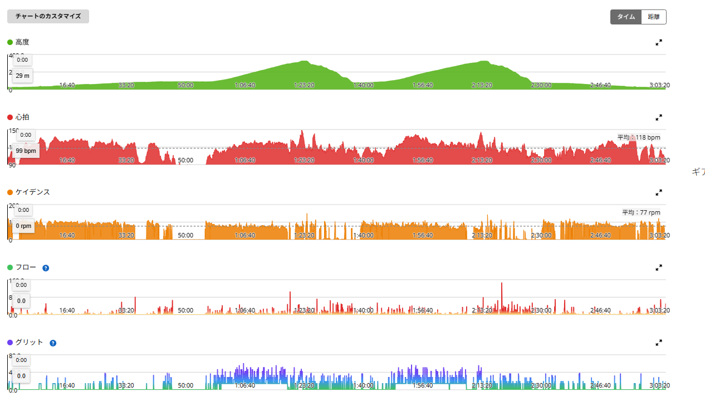
3時間走ってゾーン4はゼロ。写真も1枚も撮らなかったMTB
雨上がりの山を友人と3時間05分。42.28km、獲得589mでも平均心拍118bpm、ゾーン4以上はゼロ。高強度が続いた週の締めに長時間低強度で遊んだ日と、写真を撮り忘れた話。
外ライド・実走 / MTB / 長時間低強度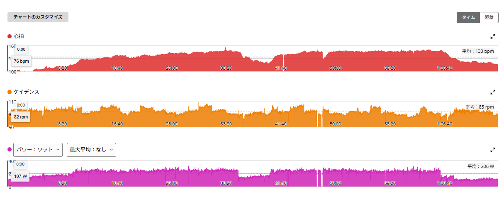
強度は落としたのにきつい。10年目のパワーメーターも途切れ始めた
雨でローラーへ変更、テンポ〜SST下限の25分×2。240Wと237Wで平均206Wなのに体感はきつく、2本目は出力が下がって心拍が上がった。連日の疲労と、10年使ったパワーメーターの接続切れの記録。
ローラー練習 / テンポ走 / パワーメーター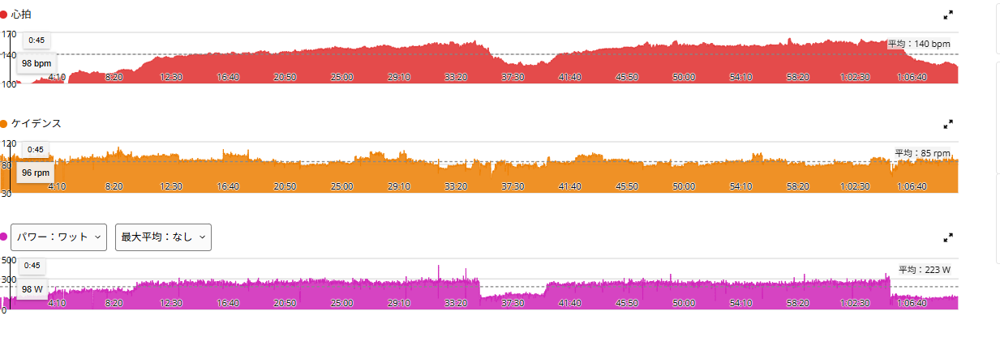
SSTは始める前がいちばん重い。259Wと254Wで揃った日
ローラーでSST25分×2。1本目259W、2本目254Wの5W差で揃えられた。前日の60/30の翌日でも完遂できた点と、ケイデンスを落として出力を作る練習を始めた記録。
ローラー練習 / SST25分×2 / ケイデンス調整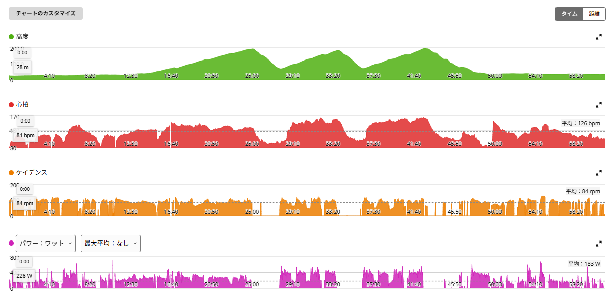
60秒ON／30秒OFF。2セット目からちゃんと苦しくなった
30/30がぬるかったので、唐沢で60秒ON／30秒OFFを初めて試した記録。ONは380〜390W台まで上振れしたが2セット完遂。1セット目は余裕、2セット目から明確にきつい。短時間反復の標準メニューが決まった日。
外ライド・実走 / 唐沢 / 60秒ON30秒OFF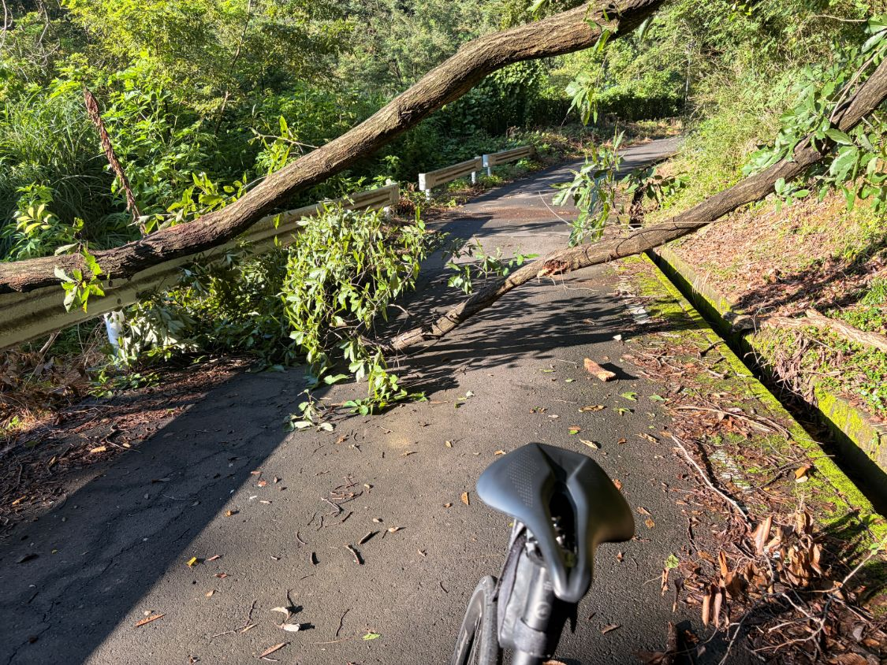
ウエット路面で予定変更。低ケイデンスでも力まず踏める幅が増えてきた
前日の雨で林道の路面が悪く、琴平・唐沢をカット。それでも西山田林道1分56秒402W、太平7分06秒319W。80rpm前後でも力まず高出力を出せた日と、Ares 2の実走デビューの記録。
外ライド・実走 / 太平・西山田林道 / 低ケイデンス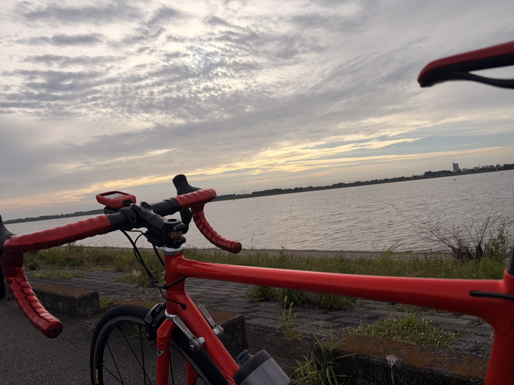
回復走が物足りない。練習がゲームみたいになってきた
ゴルビー翌日、渡良瀬遊水地で回復走。IF0.705・平均心拍114bpm・心拍ゾーン4以上ゼロの低強度で、数字ではなく脱力とフォームを確認した日。練習が楽しくなってきた理由も整理しました。
外ライド・実走 / 渡良瀬 / 回復走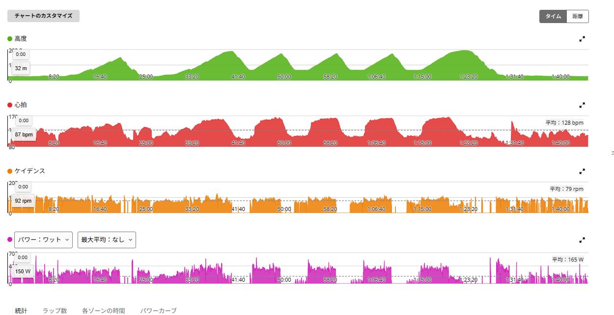
ゴルビー5本を11W差で揃えた。耐えるだけの練習ではなくなってきた
友人2人と外ゴルビー5分×5本。323W・328W・328W・321W・332Wの11W差で揃い、5本目が最高値。前回31W落ちからの改善と、次に試す60秒ON／30秒OFFの狙いを整理しました。
外ライド・実走 / ゴルビー / 60秒ON30秒OFF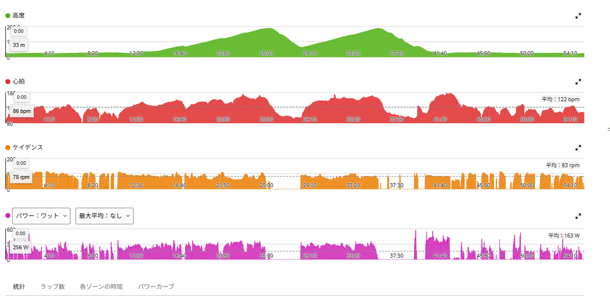
回復走のつもりが踏みすぎた。それでも明日のゴルビーはやる
ゴルビー前日に軽く整えるはずが、唐沢2本目265W、帰りのストレートで2分15秒371W。心拍ゾーン5は0秒なのにパワーゾーン5以上は8分37秒という、体感と負荷のズレを整理しました。
外ライド・実走 / 唐沢 / ゴルビー前日
30秒ON／30秒OFFはぬるかった。でも練習の方向は見えた
唐沢で30秒ON／30秒OFFを実施。TSS101.4でも体感はぬるく、パワーゾーン6以上14分09秒に対し心拍ゾーン5は0秒。60/60へ変える理由と練習3本柱を整理しました。
外ライド・実走 / 唐沢 / 30秒ON30秒OFF
前日TSS161の翌日にSST25分×2。Ares 2の違和感もようやく消えた
太平・琴平・唐沢でTSS161.1を踏んだ翌日に4本ローラーでSST25分×2。2本目247Wで完遂し、調整を続けたS-Works Ares 2でも痛みが出なかった記録です。
ローラー練習 / SST25分×2 / Ares 2
低ケイデンスで「腰で乗る」が少し分かった。太平・琴平・唐沢で感覚をつかんだ日
太平323W、琴平291W、唐沢293W。NP246W・TSS161.1の高強度ライドで、骨盤を安定させて股関節から力を伝える感覚を確かめました。
外ライド・実走 / 太平・琴平・唐沢 / 低ケイデンス
白石の翌日は、友人と会話しながら唐沢5本。登っているのに回復走だった日
TSS205.9の白石ライド翌日に、友人と会話できるペースで唐沢を5本。平均心拍100bpm、IF0.574の低強度ベース走を振り返ります。
外ライド・実走 / 唐沢 / アクティブレスト
白石29分16秒で終わらない。定峰、裏白石、登り返しまで詰め込んだ真夏の一日
白石峠を29分16秒・276Wで登った後、定峰272W、裏白石3本、友人との合流のための登り返しまで実施。獲得1,738m、TSS205.9の真夏の山岳ライドです。
外ライド・実走 / 白石・定峰・裏白石 / 真夏の補給
久しぶりに外で乗るRNC7。軽い唐沢でAethos2との差が見えた
前日の高負荷から切り替え、RNC7で唐沢まで軽い確認走。NP203Wでも体感は軽く、久しぶりの外走行でAethos2との重さや反応の違いが見えました。
外ライド・実走 / RNC7 / 回復走
うどん効果だけではない。太平・琴平・唐沢で最後まで踏めた
太平322W、琴平296W、唐沢316W。心拍が上がっても余裕があり、前夜のうどんや回復走、慣れた初代Aresなど好調を支えた条件を振り返ります。
外ライド・実走 / 太平・琴平・唐沢 / コンディション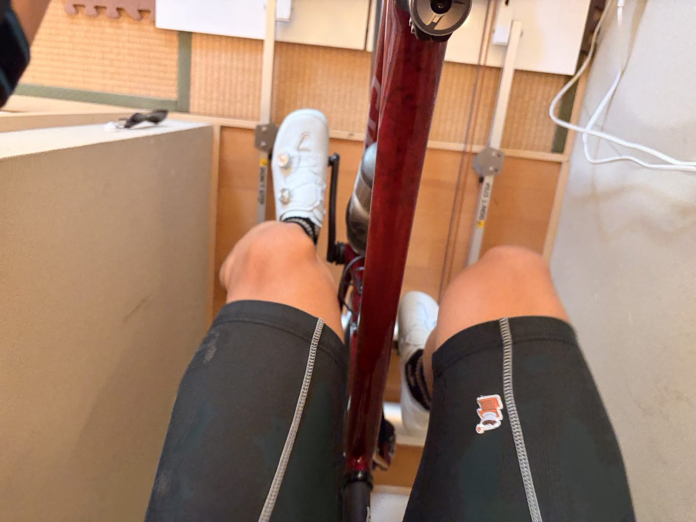
回復走40分が妙に長い。Aethos2で明日のAres 2実走に備える
外ゴルビー翌日にAethos2で40分の回復走。低負荷で脚をほぐしながら、翌日の太平でS-Works Ares 2を実走確認する準備をしました。
ローラー練習 / 機材とアイテム / 回復走
1本目348Wから5本目317Wへ。後半は垂れたけれど、外ゴルビーを最後まで完遂
唐沢で外ゴルビー5分×5を完遂。348Wから317Wへ出力が落ちた理由を、前日のSSTとペース配分から振り返ります。
外ライド・実走 / 唐沢 / ゴルビー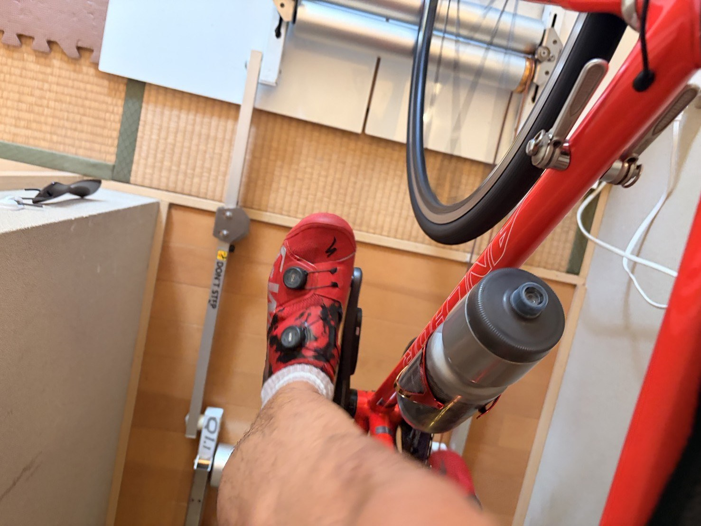
調子が良すぎて逆に不安。SST25分×2を249W・254Wで完遂した日
4本ローラーでSST25分×2を実施。1本目249W、2本目254Wで完遂できた好調日の記録と、シューズや回復など複数の要因を振り返ります。
ローラー練習 / SST / コンディション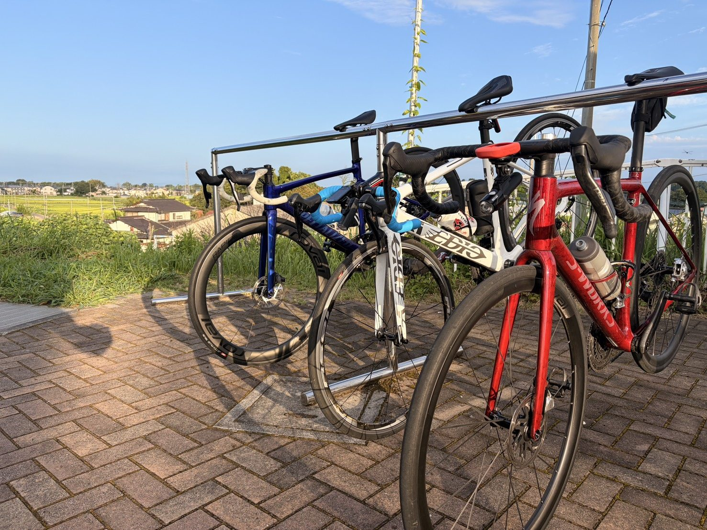
朝5時集合の友人ライド。低強度でも集団で走る楽しさは別物だった
前日の高強度ライドから一夜明け、友人2人と朝5時集合で低強度ライド。平均135Wでも集団走行ならではの変化があり、楽しさと回復と運動量を無理なく両立できました。
外ライド・実走 / 友人ライド / 低強度
2日休んだら身体が軽い。ラストSSTは5分でやめてもTSS114
2日休んだ後は身体が軽く、高強度を重ねても余裕が残りました。一方、最後に追加したSSTは5分で終了。休養とメニュー設計を考えた実走記録です。
外ライド・実走 / 休養 / 高強度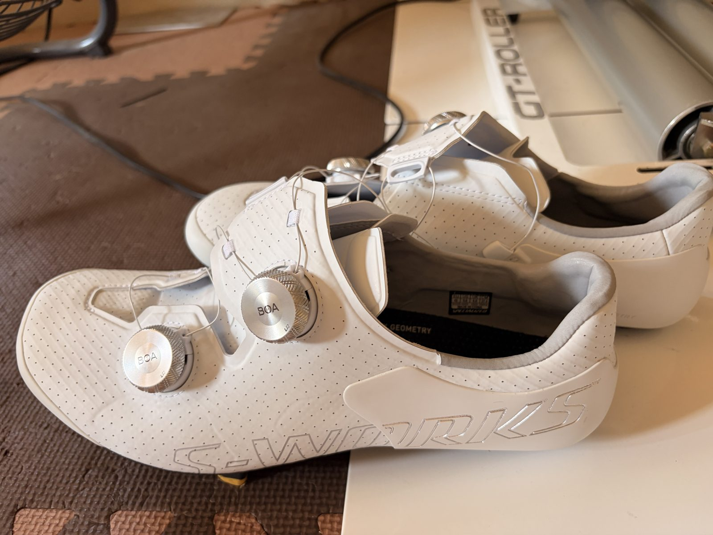
初代Aresの内装が限界に。S-Works Ares 2へ履き替えてみた
長く使った初代S-Works Aresから同じサイズのAres 2へ移行。ERGON TP1でクリート位置を移し、ローラーで初回の感触を確かめました。
機材とアイテム / シューズ / S-Works Ares 2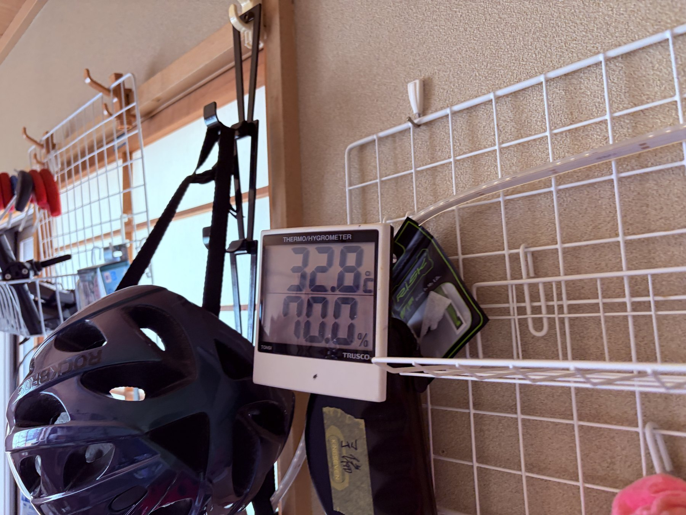
室温33℃・湿度70％のSST。1本目245W、2本目は踏めなかった
過去一暑い室内でSST25分×2に挑戦。1本目は245Wで完遂し、2本目は201Wへ落として21分継続。暑い日の可変メニューを考えました。
ローラー練習 / SST / 暑熱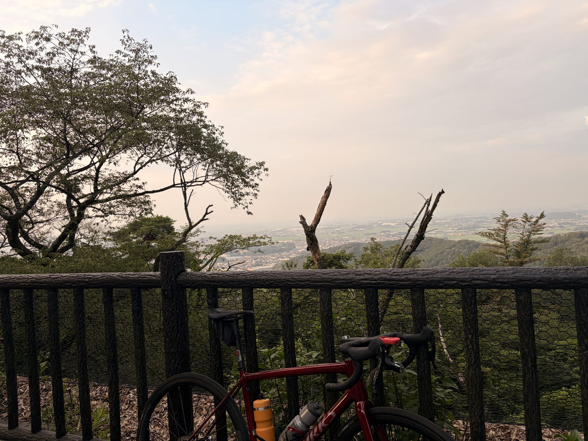
太平の後に278Wを17分半。275Wが「長く踏める数字」になってきた
太平を7分26秒・308Wで登った後、帰り道でも278Wを17分半維持。脚を使った後にもFTP付近を長く踏めるようになってきた実走記録です。
外ライド・実走 / 太平 / FTP付近の持続走
友人と話しながら唐沢5本。誰かと練習できるのが幸せと感じる
友人と会話しながら唐沢を低強度で5本。2時間、獲得標高660m、TSS62.2でも、今日の主役は数字ではなく一緒に走れる時間でした。
外ライド・実走 / 唐沢 / 友人ライド
雨上がりの唐沢ゴルビー5本。パンク修理後も過去一番先まで走れた
友人2人と雨上がりの唐沢へ。1本目直後のパンク修理で流れが止まっても、ゴルビー5分×5本を完遂。5本平均342Wで、5分間の到達地点も過去一番先まで伸びました。
外ライド・実走 / 唐沢 / ゴルビー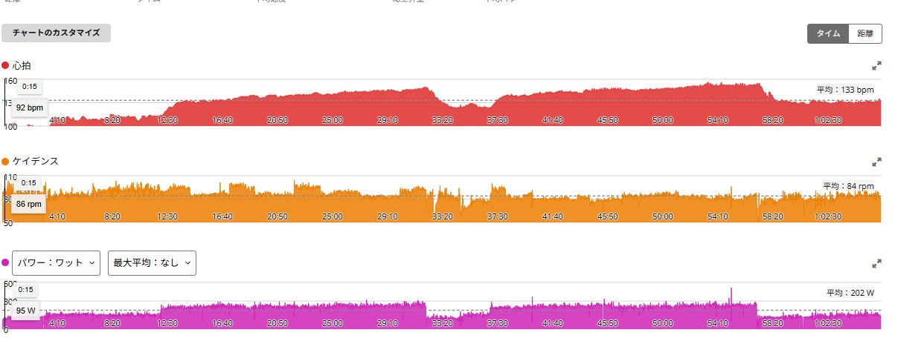
暑い室内でSST下限20分×2。243Wを揃えて見えたローラーの役割
暑い室内で出力をSST下限の243Wに調整し、20分×2を完遂。前回より9W下げたことで合計時間を30分から40分へ伸ばせました。
ローラー練習 / SST / 暑熱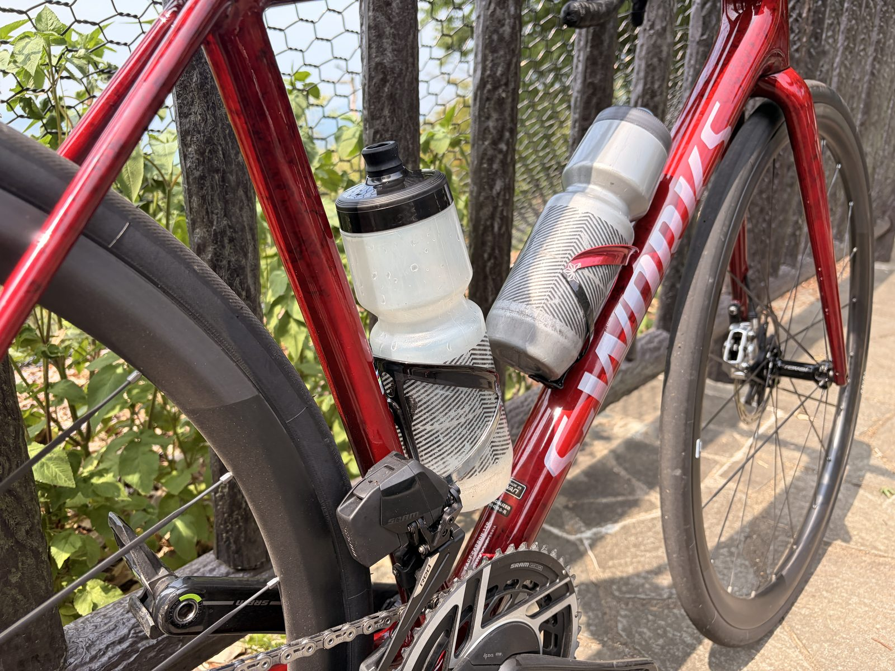
最高38℃の太平・琴平・唐沢。ボトル2本と水かけで夏ライドを耐えた日
最高38℃の暑さで予定していた平坦走をやめ、太平・逆琴平・逆唐沢へ。ボトル2本と背中への水かけを試しながらTSS151.3を走りました。
外ライド・実走 / 太平・琴平・唐沢 / 暑熱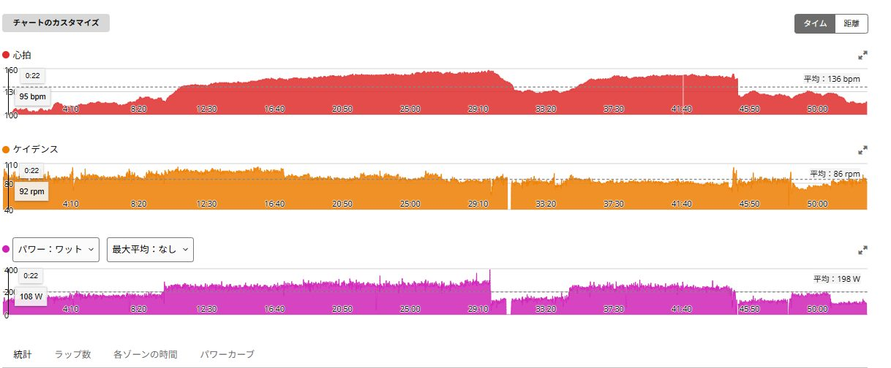
30℃の部屋でSST。脚は元気なのに息が先に終わった
室温30℃を超える部屋でSST20分×2に挑戦。1本目は252Wで完遂したものの、2本目は脚より呼吸が先に苦しくなり10分で終了しました。
ローラー練習 / SST / 暑熱
暑さで踏めないと思ったのに琴平309W。唐沢・琴平の高負荷ライド
唐沢から琴平へ回り、最後のストレートまで高負荷を継続。暑さで踏めない感覚とは反対に、琴平では平均309Wを記録しました。
外ライド・実走 / 唐沢・琴平 / 暑熱
梅雨の合間にMTB。昔はロード、今は山、それでも一緒に走っている
昔はロードで練習していた長年の友人と、今はMTBで山へ。富士ヒルや家族の話をしながら会話ペースで走り、帰宅後はStatus 140を洗いました。
外ライド・実走 / MTB / 友人ライド
スマートローラーを借りて試した。でも今後も4本ローラーでいく
知人から借りたTacx NEO Smartでデモコースを試走。自動負荷や石畳の振動は面白かったものの、今の自分には慣れた4本ローラーが合うと判断しました。
機材とアイテム / スマートローラー / Tacx NEO Smart
友人と話しながら唐沢5本。高出力を控えて登った日
膝前側の軽い違和感を見ながら、友人と会話ペースで唐沢を5本。低強度でも674m登り、自転車を続けられる時間のありがたさを感じた記録です。
外ライド・実走 / 唐沢 / 低強度
渡良瀬遊水地でアクティブレスト。膝に違和感が出たので少し慎重にする
高負荷3日間の翌日は、渡良瀬遊水地を低強度で周回。膝前側の軽い違和感を無視せず、高出力を控えて様子を見ることにしました。
外ライド・実走 / アクティブレスト / コンディション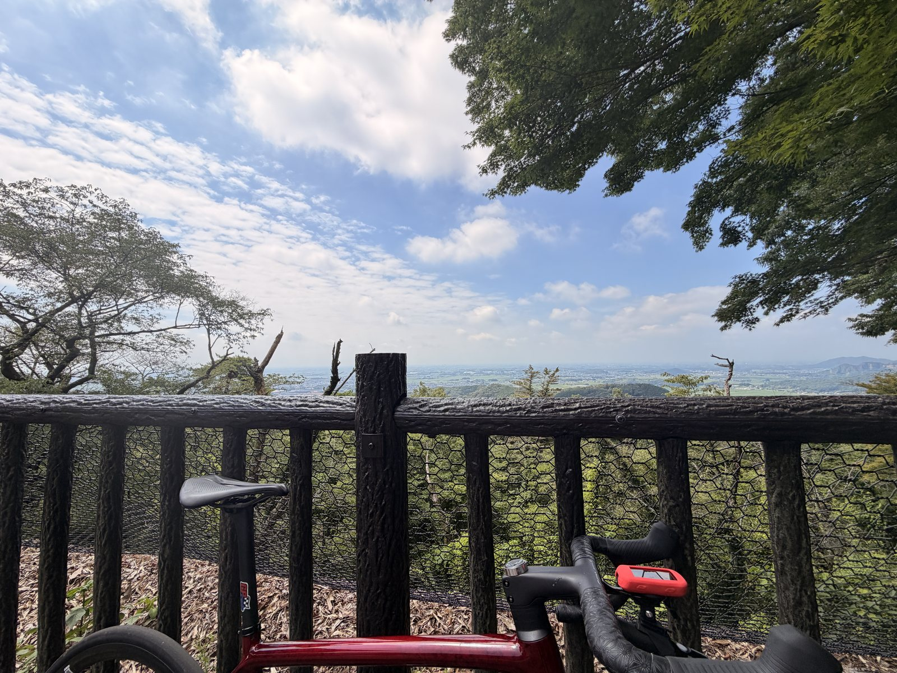
外ゴルビー、SST、そして太平。3日目でも坂を踏めた日
唐沢ゴルビー、ローラーSSTの翌日に太平へ。坂ON、下りOFF、それ以外テンポで走り、3日目でも太平山316W、帰りのストレート282Wを踏めた記録です。
外ライド・実走 / 太平 / テンポ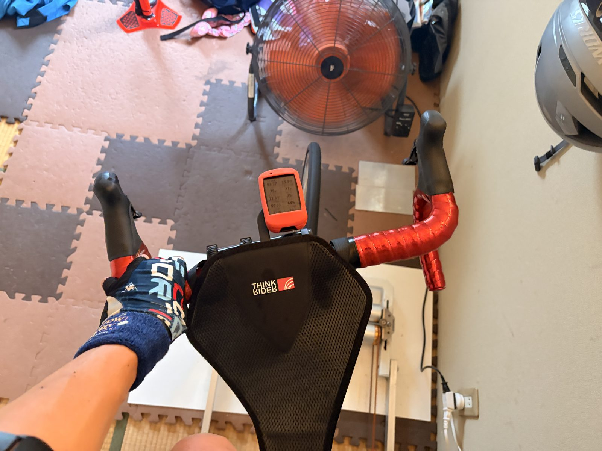
唐沢ゴルビー翌日にSST20分×2。甘くせず雑にしない
前日の唐沢ゴルビー5分×5本の翌日に、ローラーでSST20分×2相当。255Wで2本そろえ、最後の1分刺激の入れ方も見直した記録です。
ローラー練習 / SST / ゴルビー翌日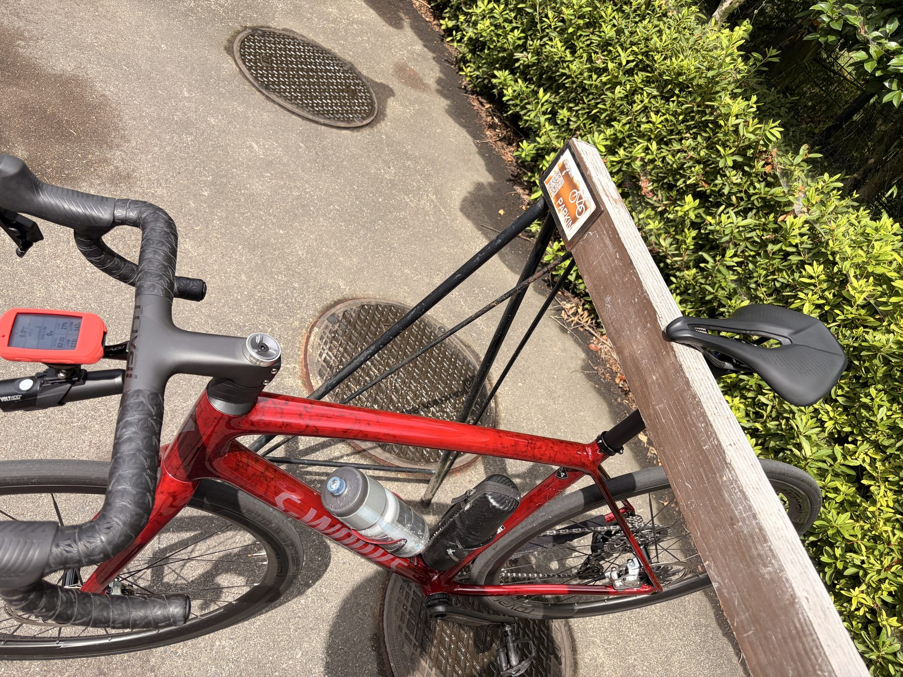
唐沢ゴルビー5本完遂。5本目が一番踏めた日
AIの予定では5分×3〜4本だった唐沢ゴルビー。走ってみたら脚が回り、全本330W以上、5本目340Wで一番踏めた日の記録です。
外ライド・実走 / ゴルビー / サドル検証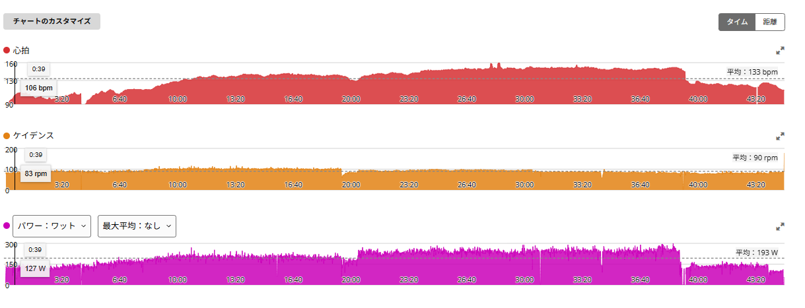
40分走のつもりが不発。気分が乗らない日でも回した
245W前後の40分走を狙ったものの、今日は気分が乗らず不発。それでも44分回して平均193W、NP208W、TSS42.4を積んだ低〜中強度の維持日です。
ローラー練習 / 40分走 / ベース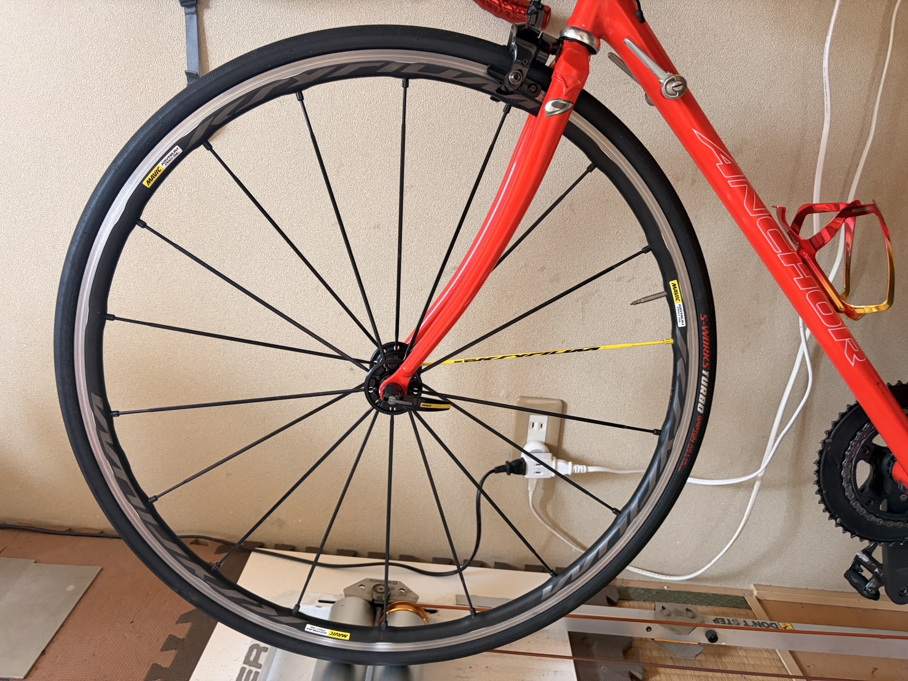
40分走が気づけばSSTに。息苦しさが減ってきたローラー練
予定では軽めのテンポ寄りだったローラー練が、結果的に40分のテンポ〜SST走に。息苦しさが減り、後半に自然と出力が上がった日の記録です。
ローラー練習 / SST / 40分走
ゴルビー翌日にSST20分×2。2本目後半でゾーンに入った日
無酸素寄せゴルビー翌日に、ローラーでSST20分×2と高出力刺激。2本目後半でリズムに入り、TSS95.5を積めた一方、汗とローラー落車もあった記録です。
ローラー練習 / SST / ゴルビー翌日
HR70のバッテリー残量をGarminに表示。Sensor Batteryを使ってみた
iGPSPORT HR70の残量をGarmin Edge 530に表示するため、Connect IQのSensor Batteryを試した記録。Show Heart Rate設定やインストール待機中の対処もまとめました。
機材とアイテム / HR70 / Garmin
Garminに無酸素不足と言われたので、330W以上でゴルビーしてきた
Garminの無酸素不足を受けて、外で無酸素寄せゴルビーを実施。5分走を340W、341W、328W、318W、319Wでまとめた記録です。
外ライド・実走 / 無酸素寄せゴルビー / 5分走
Garminに無酸素不足と言われたので、AIと明日のメニューを決めた
唐沢・琴平方面を走ったあと、Garminの負荷バランスで無酸素不足と表示。330W以上を意識して、翌日の無酸素寄せゴルビーを組んだ記録です。
ローラー練習 / Garmin / 無酸素寄せゴルビー
3分のはずが4分。VO2ローラーを間違えて高難度にした日
VO2 3分メニューのつもりが、4分メニューだと勘違い。完遂できなかったと思ったが、実際は3分想定の強度を4分近く維持していた日の記録です。
ローラー練習 / VO2 / メニュー確認
SST20分×2。ローラーで250W台を崩さず踏めた日
室内ローラーでSST20分×2。1本目255W、2本目253Wでそろえられた一方、高ケイデンス維持とお尻の痛みにはまだ課題が残った日の記録です。
ローラー練習 / SST / 20分×2
酒も菓子もやめたのに、お腹だけ残る問題
体重75kg時点のお腹まわり記録。酒も菓子もかなり減らし、練習も積んでいるのに下腹が残る問題を、富士ヒルに向けた減量と回復のバランスで整理しました。
体重とコンディション / 減量 / 写真記録
太平山317Wより、帰りのストレート280Wが収穫だった日
太平方面へ外ライド。太平山は7分17秒317W。さらに帰りのストレートで16分32秒280Wを踏めて、力が逃げない感覚があった日の記録です。
外ライド・実走 / 太平 / SST
唐沢5分337W、琴平12分305W。ローラー後でも外なら踏めた
SSTとVO2のローラー練習を2日続けたあと、唐沢山と琴平峠へ。唐沢5分337W、琴平12分305W、帰りの直線もSST意識で踏めた実走ログです。
外ライド・実走 / 唐沢 / 琴平
VO2ローラーで4本目に撃沈。でも9分テンポは踏めた
雨の日にRNC7とGT-ROLLER Q1.1でVO2 3分×4本。1〜3本目は狙い通り、4本目は317Wまで落ちたが、その後9分240Wのテンポ走は踏めました。
ローラー練習 / VO2 / 3分走
300Wでも足りない。だから練習が面白くなった
脳内サイクリング Rev.1で富士ヒルを300W・総重量82kgでシミュレーションしたら1:07:09。ゴールド目安の65分切りには届かなかったが、できないことが見えたから練習が面白くなった話です。
ローラー練習 / 目標 / シミュレーション
雨なのでローラー。SST2本目で心拍が持たなかった日
雨の日にRNC7とGT-ROLLER Q1.1でSST20分×2を狙った記録。1本目は20分248W、2本目は15分254W。脚ではなく心拍と呼吸が先に来た日です。
ローラー練習 / SST / 心拍
自転車とは別枠で始めた毎日筋トレが、登りに効いている気がしてきた
健康と収益化の実験として始めた「ちょいタフ筋トレ部」。1日20分の全身筋トレが、ダンシングや登りの安定感にも効いている気がしてきた話です。
体重とコンディション / 筋トレ / YouTube
尻が痛くて自転車休み。代わりにジョギングした日
唐沢ライドでサドル擦れが悪化し、自転車は休み。サドルに触れなければ痛くないので、買い物ジョグで6.16km動いた代替運動の実験です。
体重とコンディション / ラン / 代替運動
唐沢ライドで尻が限界。パワーより痛みが勝った日
太平TSS120の翌日に唐沢へ。データ上は登れているのに、サドル擦れの痛みで集中できず踏めなかった日。ワセリン初購入まで。富士ヒルの前に、まず尻を守る話。
外ライド・実走 / 唐沢
Aethos2乗りが、富士ヒル目線でSL8と比べてみた
普段ライド用に買ったAethos2を、富士ヒルゴールド目線でTarmac SL8と比べ直した。注ぐTarmac・寄り添うAethos、8%が分かれ目、ホイールの迷いも。結論は「Aethos2で十分、買い替えない」。
機材とアイテム / 比較
iGPSPORT HR70レビュー。胸ベルトが苦手でも心拍が取れた
胸ベルト式が苦手で10年以上心拍計から離れていた私が、腕バンド型のiGPSPORT HR70を初投入。苦しくない・装着が楽・Garminの評価も現実に近づいた初回レビューです。
機材とアイテム / 心拍計 / レビュー
心拍計を付けて太平ライド。レスト明けでもTSS120
月曜レスト明けに太平でしっかり登ったライド。腕バンド型心拍計を10年ぶりに初投入。登る所は登り休む所は休む、でTSS120.3でした。
外ライド・実走 / 太平 / 心拍計
Aethos2のステムキャップをWolfTooth MK0に交換。軽量化はなかったけどカッコいいからヨシ
軽量化を狙ってWolfTooth MK0に交換したら、元の黒キャップも2.4gと軽く、MK0は2.5g。ほぼ同重量だったけど、見た目が良いから満足という短めカスタム日誌です。
機材とアイテム / カスタム
ロードバイクで強くなるために、休む日を作った
昨日の友人ライドでTSS83.6。今日は乗りたい気持ちを抑えて、明日以降に踏むためのフルレスト寄りの日にしました。
コンディション / レスト / AI相談
友人と渡良瀬CRへ。回復走でもTSS83
回復走のつもりで友人と渡良瀬CRへ。32〜35km/h前後のトレインが楽しく、終わってみればTSS83.6の有酸素ライドでした。
外ライド / 渡良瀬CR / 友人ライド
マイプロからエクスプロージョンに変えた理由。最安より「考えずに買えるか」だった
マイプロの方が安い。それでもエクスプロージョンを選んだ理由を、g単価、セール価格、関税ラインの面倒さから整理しました。
食事と補給 / プロテイン / AI相談
15分260W×2の予定が、なぜか270W×2になったローラー練習
20分走の翌日に15分走×2。予定より踏めたが、TSS80.9で軽くはなく、最後は尻のケアまでAI相談になりました。
ローラー練習 / 15分走 / AI相談
20分285W。15分までは行けると思ったが、そこから地獄だった
GT-ROLLER Q1.1とRNC7で20分走。Garminはリカバリーと言ったが、本人の内臓はそう言っていません。
ローラー練習 / FTP確認 / AI相談
旧ブログを掘り返したら、219本の記事と523枚の画像が出てきた
Wayback Machineから旧ブログを発掘。過去の自分、今の自分、AIを同じ机につかせるための下準備です。
旧ブログ発掘 / AI相談
昔の富士ヒル追い込み論を、今の方針で読み直す
追い込みすぎない方針の根っこにある話。AIにもツッコませながら、昔の富士ヒル観を今の練習方針へつなぎ直します。
旧ブログ発掘 / 富士ヒル
Tarmac SL6を今読み直す。Aethos2で富士ヒルへ行く前に
2019年の実績と、今のAethos2をつなぐ機材リメイク。昔の機材感覚を今の目線で整理します。
旧ブログ発掘 / 機材
脚が重いので、ご飯300g実験を開始した
脚に力が入らない感覚を、糖質不足の仮説で見ていく食事実験です。
食事実験 / 補給 / AI相談記事の置き場
今後の記事が増えてきた時の分類です。最初から完璧に分けすぎず、読まれ方を見ながら調整します。